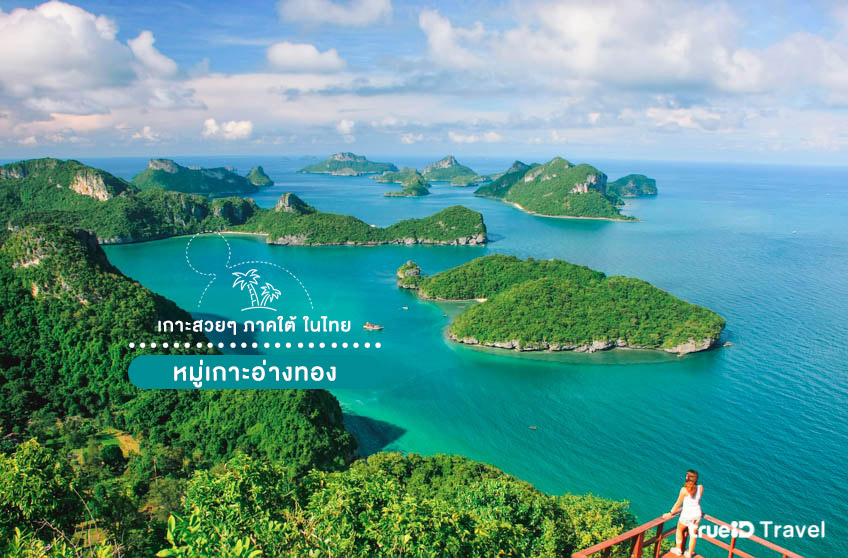

หมู่เกาะอ่างทอง สุราษฎร์ธานี
อุทยานแห่งชาติหมู่เกาะอ่างทอง ตั้งอยู่ที่จังหวัดสุราษฎร์ธานี ประกอบด้วยเกาะต่างๆถึง 42 เกาะ เกาะที่สำคัญได้แก่ เกาะวัวตาหลับ เกาะพะลวย เกาะวัวจิ๋ว เป็นต้น ตามเกาะต่างๆจะมีหาดทรายอยู่เกือบทุกเกาะ บางเกาะหาดทรายมีสีขาวสะอาดเนียนนุ่ม บางเกาะมีปะการังตามชายทะเลหลายชนิด จึงเป็นอีกที่ท่องเที่ยวหนึ่งที่พลาดไม่ได้เลยในการมาเที่ยวทะเลใต้